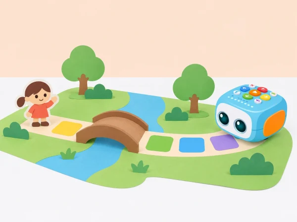

Com podem ordenar les escenes i les ordres perquè Tale-Bot travesse el pont i altres persones puguen seguir el nostre conte?
La classe inventa una història que passa en un paisatge de marjal imaginat: un personatge vol visitar una amistat, travessar un pont de paper i arribar a una festa de poble. Els llocs i personatges són de ficció; no es presenten com una descripció científica de la fauna ni del Parc Natural de l’Albufera. L’alumnat crea un inici, un canvi i un final, representa cada escena en un mapa propi i programa Tale-Bot amb ordres físiques de moviment.
La narració pot fer-se en directe, amb pictogrames o amb una gravació molt breu del Tale-Bot Pro si el centre confirma que la funció de micròfon està disponible i el grup tria usar-la. L’enregistrament és opcional i s’elimina després de la sessió. Ningú no ha de posar la seua veu al robot per participar.
Aprenentatges: ordenar esdeveniments; descriure lloc, personatge i acció; relacionar moviment i relat; anticipar destinacions; comprovar i depurar una instrucció; expressar-se amb llenguatge oral, visual o corporal; escoltar i revisar una història per a una audiència.
Prepareu Tale-Bot Pro carregat, mapa de quadrícula en blanc, targetes de personatge i lloc, tires d’ordres, peces planes per al pont de paper i pictogrames per al guió. Si s’usa l’enregistrament, consulteu el manual del model i comproveu abans de classe com s’inicia, es reprodueix i s’esborra una pista amb la targeta de micròfon. La disponibilitat de la targeta i la durada de les gravacions depenen del contingut del kit; no afegiu accessoris desconeguts.
Proveu en la superfície de l’aula que una casella siga adequada per a un avanç del robot. Les ordres bàsiques habituals inclouen avançar o retrocedir aproximadament 10 cm i girar 90°; confirmeu distància, orientació inicial i funcionament amb el Tale-Bot del centre. El pont és una part visual del mapa, no cal que el robot el puge: col·loqueu-lo sobre una casella plana prou ampla perquè el trajecte no es bloquege.
Vocabulari: personatge, escenari, inici, canvi, final, casella, avançar, girar, ordre, seqüència i narrador/a. Useu imatges per introduir les paraules i distingiu «què fa el personatge» de «què fa el robot».
Obriu amb una conversa a partir d’una imatge pròpia o autoritzada d’un paisatge amb aigua, camins i vegetació. Expliqueu que el conte serà imaginari i que no cal conéixer noms d’espècies per a crear-lo. Cada grup tria un personatge de paper, un lloc d’eixida i un destí. Després decideix quin xicotet problema fa necessari el viatge: s’ha perdut una invitació, falta una peça per a la festa o el personatge vol tornar un llibre.
Ordeneu tres pictogrames: «comença», «passa una cosa» i «arriba a una solució». Dicteu o dibuixeu una frase per a cada escena. Evidència: guió gràfic amb protagonista, propòsit i tres moments. Preguntes docents: «Què vol el personatge? Què canvia al mig del conte? Què sabrà qui l’escolte al final?»
Poseu el mapa en blanc sobre una taula, marqueu inici, pont i destinació, i col·loqueu-hi les targetes de les tres escenes. Primer moveu una fitxa de paper una casella cada vegada. L’alumnat tria les ordres de Tale-Bot i les posa en una tira visual abans de tocar el robot. Identifiqueu cap a on mira al començament i representeu cada gir amb el cos o amb una fletxa gran.
Compareu dues rutes possibles fins al mateix destí i trieu la que siga més fàcil de llegir alhora que manté l’ordre narratiu. Evidència: mapa amb les escenes i seqüència d’ordres anticipada. Preguntes docents: «Quina ordre travessa el pont? On ha de parar perquè puguem contar la part del mig?»
Introduïu les ordres de la tira en Tale-Bot i feu una execució curta fins al pont. Compareu la casella real amb la prevista; si hi ha una diferència, reviseu posició, orientació, nombre d’avançaments i girs. Canvieu una instrucció cada vegada i torneu a provar. Assigneu rols de programació, observació i narració, amb rotació breu.
Si la funció de micròfon del model està comprovada i el grup vol usar-la, graveu una sola frase fictícia per escena amb la veu del docent o una veu voluntària amb consentiment. No inclogueu noms, informació personal ni vivències. Escolteu-la una vegada i esborreu-la en acabar; com a alternativa, narreu en directe, mostreu targetes o feu un gest acordat. Evidència: ruta depurada i narració representada d’una manera triada. Preguntes docents: «Quina instrucció hem revisat? Com podem contar-ho sense enregistrar cap veu?»
Una parella o un altre grup mira el mapa i segueix Tale-Bot sense rebre l’explicació abans d’hora. En cada parada, el grup creador presenta l’escena amb narració, pictograma o una pista sonora opcional. L’audiència ordena després les tres targetes i diu quina pista l’ha ajudada a entendre la història.
Si una escena no s’entén, reviseu-ne la posició, el text oral o el pictograma. Tanqueu amb una frase d’autoavaluació: «Hem canviat… perquè…». Comproveu que qualsevol enregistrament temporal s’ha esborrat i que les veus no s’han compartit fora del grup. Evidència: ruta llegible, guió final i una millora justificada per l’audiència. Preguntes docents: «Quina part ha sigut més fàcil de seguir? Quina pista ha ajudat a entendre el final?»
Guardeu el guió gràfic, el mapa, les tires d’ordres i una nota d’observació de l’audiència. Observeu si l’alumnat:
No s’avalua l’expressivitat vocal individual, la longitud del conte ni que Tale-Bot arribe a la primera. Es valora la seqüència, la comprensió del mapa i la revisió del relat.
Feu servir pictogrames grans, caselles contrastades i guions tàctils si són útils. Oferiu narració compartida, veu del docent, senyals no sonors o resposta amb targetes. Ningú no ha de parlar en públic, gravar-se ni identificar-se al conte. Si useu enregistrament, expliqueu-ne el propòsit, demaneu consentiment segons les normes del centre, escolteu-lo només dins de la sessió i esborreu-lo després. Repartiu rols de narrador/a, ordenació, comprovació i programació; no cal manipular el robot per participar.
Tale-Bot Pro ofereix una funció d’enregistrament de veu i narració creativa; el fabricant la descriu en la fitxa del producte. Les Activity Cards oficials s’adrecen a infants de 3–5 anys i suggereixen sessions de 20–30 minuts. Aquesta proposta crea el conte, mapa i seqüència de proves propis i deixa l’enregistrament com a opció amb alternativa completa.